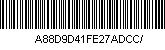

Voucher
Valable pour 1
Nom : Olivier van de Kerchove
Date de naissance: 17/05/1976
e-mail : o.vandekerchove@brusselsinternational.be
Pays : Belgium
Description du produit
D*Tours - Audioguides MP3
Valeur
1 D*Tours - Quartier des Marolles FR 1x5,00€ = 5,00€
Téléchargement du fichier
Pour télécharger le fichier cliquez sur ce lien :
Conditions générales de vente
Point de départ :
Au Centre Culturel Jacques Franck
chaussée de Waterloo 94
1060 Bruxelles
Remarque :
- A partir de 2 D*Tours téléchargés, vous bénéficiez de 20 % de réduction sur le total (ex : 2 téléchargements = 8 €)
- Le D*Tours sera ouvert après paiement en fichier zip (MP3 : 95 Mo)
Conditions
- Le copyright de chaque balade appartient à D*Tours.
- Lorsque vous achetez un D*Tours, vous acceptez le fait qu'aucune modification, transfert, distribution ou copie du fichier ne sera permise.
- Les D*Tours sont à usage personnel . Vous ne pouvez transfèrer votre lien de téléchargement à un tiers.
- Après avoir acheté votre D*Tours, vous pouvez le stocker sur votre disque dur afin de décompresser les fichiers pour les graver sur CD ou les transfèrer sur votre lecteur MP3. Il est ensuite de votre reponsabilité de ne pas endommager ou perdre le fichier que vous avez acheté.
- Occasionellement, il peut arriver qu'un problème technique survienne lors du téléchargement du D*Tours. Si vous n'avez pu télécharger le fichier endéans les trois jours, veuillez contacter le webmaster via le mail suivant : o.vandekerchove@brusselsinternational.be
